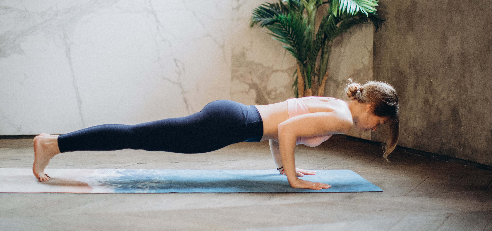
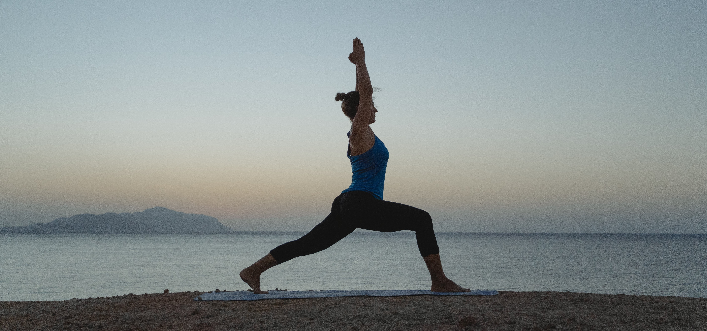

The Cobra Pose
Cobra Pose is a great way to counteract the effects of slouching and slumping your shoulders. It stretches the spine and can help strengthen the muscles that support your head and neck. All of this may lead to better posture

The plank
The plank pose strengthens your spine, your rhomboids and trapezius, and your abdominal muscles, which naturally result in a strong posture as they grow in strength.

The Warrior pose
Warrior 1 Pose is a standing yoga pose that helps build focus, power and stability. This foundational pose stretches the front side of the body and is great for building strength in the legs, core and back.